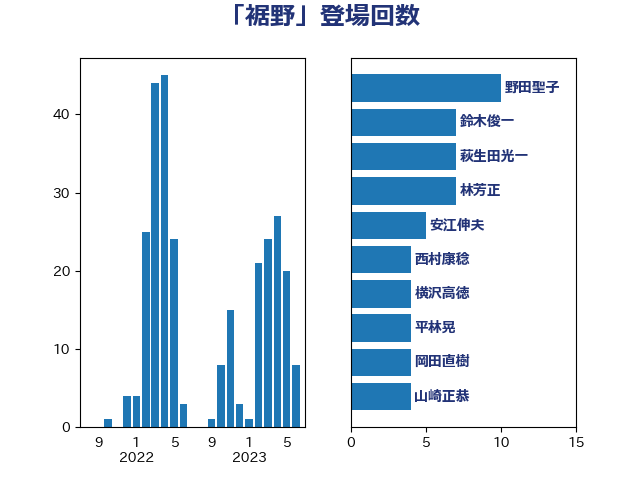

単語「裾野」

| 赤羽一嘉 | 公明党 | 17 回 |
| 萩生田光一 | 自由民主党 | 13 回 |
| 野田聖子 | 自由民主党 | 10 回 |
| 梶山弘志 | 自由民主党 | 9 回 |
| 坂本哲志 | 自由民主党 | 8 回 |
| 林芳正 | 自由民主党 | 7 回 |
| 茂木敏充 | 自由民主党 | 6 回 |
| 吉良よし子 | 日本共産党 | 5 回 |
| 中西祐介 | 自由民主党 | 4 回 |
| 小林鷹之 | 自由民主党 | 4 回 |
| 小泉進次郎 | 自由民主党 | 4 回 |
| 山崎正恭 | 公明党 | 4 回 |
| 横沢高徳 | 立憲民主党 | 4 回 |
| 河野義博 | 公明党 | 4 回 |
| 鈴木俊一 | 自由民主党 | 4 回 |
| 守島正 | 日本維新の会 | 3 回 |
| 安江伸夫 | 公明党 | 3 回 |
| 末松信介 | 自由民主党 | 3 回 |
| 熊野正士 | 公明党 | 3 回 |
| 礒崎哲史 | 国民民主党 | 3 回 |
| 若宮健嗣 | 自由民主党 | 3 回 |
| 西岡秀子 | 国民民主党 | 3 回 |
| 長浜博行 | 無所属 | 3 回 |
| 高橋千鶴子 | 日本共産党 | 3 回 |
| 上川陽子 | 自由民主党 | 2 回 |
| 丸川珠代 | 自由民主党 | 2 回 |
| 井上信治 | 自由民主党 | 2 回 |
| 加田裕之 | 自由民主党 | 2 回 |
| 古川元久 | 国民民主党 | 2 回 |
| 堂故茂 | 自由民主党 | 2 回 |
| 小宮山泰子 | 立憲民主党 | 2 回 |
| 山際大志郎 | 自由民主党 | 2 回 |
| 岡本三成 | 公明党 | 2 回 |
| 橋本聖子 | 無所属 | 2 回 |
| 浜口誠 | 国民民主党 | 2 回 |
| 源馬謙太郎 | 立憲民主党 | 2 回 |
| 田村まみ | 国民民主党 | 2 回 |
| 白石洋一 | 立憲民主党 | 2 回 |
| 石井啓一 | 公明党 | 2 回 |
| 舩後靖彦 | れいわ新選組 | 2 回 |
| 菅義偉 | 自由民主党 | 2 回 |
| 西銘恒三郎 | 自由民主党 | 2 回 |
| 足立敏之 | 自由民主党 | 2 回 |
| 野上浩太郎 | 自由民主党 | 2 回 |
| 鈴木貴子 | 自由民主党 | 2 回 |
| 阿部司 | 日本維新の会 | 2 回 |
| 青柳仁士 | 日本維新の会 | 2 回 |
| 須藤元気 | 無所属 | 2 回 |
| 高村正大 | 自由民主党 | 2 回 |
| ながえ孝子 | 無所属 | 1 回 |
| 一谷勇一郎 | 日本維新の会 | 1 回 |
| 三ッ林裕巳 | 自由民主党 | 1 回 |
| 上野通子 | 自由民主党 | 1 回 |
| 下条みつ | 立憲民主党 | 1 回 |
| 中川宏昌 | 公明党 | 1 回 |
| 中野洋昌 | 公明党 | 1 回 |
| 井上英孝 | 日本維新の会 | 1 回 |
| 伊藤孝江 | 公明党 | 1 回 |
| 佐々木紀 | 自由民主党 | 1 回 |
| 前原誠司 | 国民民主党 | 1 回 |
| 古川康 | 自由民主党 | 1 回 |
| 古賀友一郎 | 自由民主党 | 1 回 |
| 吉川ゆうみ | 自由民主党 | 1 回 |
| 塩川鉄也 | 日本共産党 | 1 回 |
| 室井邦彦 | 日本維新の会 | 1 回 |
| 宮崎雅夫 | 自由民主党 | 1 回 |
| 宮本徹 | 日本共産党 | 1 回 |
| 宮路拓馬 | 自由民主党 | 1 回 |
| 小林茂樹 | 自由民主党 | 1 回 |
| 小野泰輔 | 日本維新の会 | 1 回 |
| 山下貴司 | 自由民主党 | 1 回 |
| 山本博司 | 公明党 | 1 回 |
| 岩田和親 | 自由民主党 | 1 回 |
| 岸田文雄 | 自由民主党 | 1 回 |
| 平林晃 | 公明党 | 1 回 |
| 斉藤鉄夫 | 公明党 | 1 回 |
| 本庄知史 | 立憲民主党 | 1 回 |
| 杉尾秀哉 | 立憲民主党 | 1 回 |
| 柴田巧 | 日本維新の会 | 1 回 |
| 森屋隆 | 立憲民主党 | 1 回 |
| 河西宏一 | 公明党 | 1 回 |
| 清水真人 | 自由民主党 | 1 回 |
| 熊谷裕人 | 立憲民主党 | 1 回 |
| 片山大介 | 日本維新の会 | 1 回 |
| 田中英之 | 自由民主党 | 1 回 |
| 石井拓 | 自由民主党 | 1 回 |
| 福山哲郎 | 立憲民主党 | 1 回 |
| 稲富修二 | 立憲民主党 | 1 回 |
| 笠浩史 | 無所属 | 1 回 |
| 緑川貴士 | 立憲民主党 | 1 回 |
| 美延映夫 | 日本維新の会 | 1 回 |
| 自見はなこ | 自由民主党 | 1 回 |
| 落合貴之 | 立憲民主党 | 1 回 |
| 赤木正幸 | 日本維新の会 | 1 回 |
| 赤池誠章 | 自由民主党 | 1 回 |
| 赤澤亮正 | 自由民主党 | 1 回 |
| 進藤金日子 | 自由民主党 | 1 回 |
| 道下大樹 | 立憲民主党 | 1 回 |
| 里見隆治 | 公明党 | 1 回 |
| 重徳和彦 | 立憲民主党 | 1 回 |
| 鈴木憲和 | 自由民主党 | 1 回 |
| 青山大人 | 立憲民主党 | 1 回 |
| 青木愛 | 立憲民主党 | 1 回 |
| 鳩山二郎 | 自由民主党 | 1 回 |